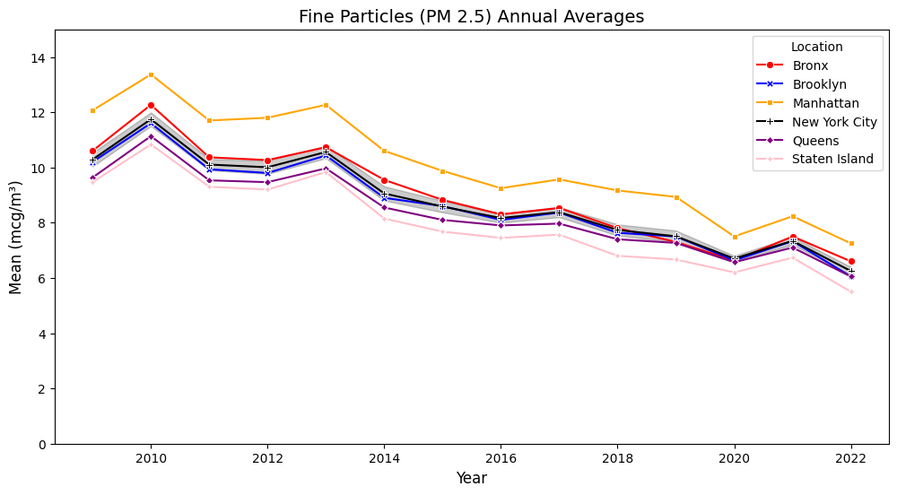

if not df.empty: df.to_csv(“converted_data.csv”, index=False) print(“Conversion complete! Check converted_data.csv”) else: print(“No data to write to CSV”)
print(“Processed data saved as pm_annual_avg.csv”)
Question 2b
Code
%matplotlib inlineimport pandas as pdimport matplotlib.pyplot as pltimport seaborn as snspm_annual_avg = pd.read_csv("pm_annual_avg.csv")major_locations = ["New York City", "Bronx", "Brooklyn", "Manhattan", "Queens", "Staten Island"]filtered_data = pm_annual_avg[pm_annual_avg["Geo Place Name"].isin(major_locations)]palette = {"New York City": "black","Bronx": "red","Brooklyn": "blue","Manhattan": "orange","Queens": "purple","Staten Island": "pink"}plt.figure(figsize=(12, 6))# Create the line plotsns.lineplot( data=filtered_data, x="Year", y="Data Value", hue="Geo Place Name", style="Geo Place Name", markers=True, dashes=False, palette=palette)# Titles and labelsplt.title("Fine Particles (PM 2.5) Annual Averages", fontsize=14)plt.xlabel("Year", fontsize=12)plt.ylabel("Mean (mcg/m³)", fontsize=12)plt.legend(title="Location")plt.ylim(0, 15) # Adjust the y-axis to match the original range# Show the plotplt.show()

Question 3
data = pd.read_csv(“converted_data.csv”) print(data.columns)
Code
import pandas as pdimport matplotlib.pyplot as pltimport seaborn as snsdf_cardiovascular = df[df["Name"].str.contains("Cardiovascular hospitalizations due to PM2.5", case=False, na=False) & (df["Geo Type Name"] =="Borough")].copy()df_respiratory = df[df["Name"].str.contains("Respiratory hospitalizations due to PM2.5", case=False, na=False) & (df["Geo Type Name"] =="Borough")].copy()df_cardiovascular['year'] = pd.to_datetime(df_cardiovascular['Start Date']).dt.yeardf_respiratory['year'] = pd.to_datetime(df_respiratory['Start Date']).dt.yeardf_combined = pd.concat([df_cardiovascular, df_respiratory])df_combined.loc[:, "Geo Type Name"] = df_combined["Geo Type Name"].fillna("Unknown")# Merge both datasets for a combined FacetGrid approachdf_cardiovascular['Geo Type Name'] ="Cardiovascular"df_respiratory['Geo Type Name'] ="Respiratory"df_combined = pd.concat([df_cardiovascular, df_respiratory])# Define color palette for better distinctionpalette = sns.color_palette("husl", df_combined['Geo Place Name'].nunique())# Create FacetGrid to show two subplots in a single structureg = sns.FacetGrid(df_combined, col="Geo Type Name", hue="Geo Place Name", palette=palette, height=6, aspect=1.5, sharex=True, sharey=False)# Map a lineplot onto the FacetGridg.map(sns.lineplot, "year", "Data Value", marker="o")# Add titles and labelsg.set_axis_labels("Year", "Hospitalizations per 100,000 adults")g.set_titles(col_template="{col_name} Hospitalizations")g.add_legend(title="Neighborhood", bbox_to_anchor=(1, 0.5), loc="center left")# Rotate x-axis labels for better readabilityfor ax in g.axes.flat: ax.set_xticklabels(ax.get_xticklabels(), rotation=45)# Display the plotplt.show()
/var/folders/qs/_lhr02x10x33snm5wyrb3s700000gn/T/ipykernel_61663/3272663569.py:40: UserWarning: set_ticklabels() should only be used with a fixed number of ticks, i.e. after set_ticks() or using a FixedLocator.
ax.set_xticklabels(ax.get_xticklabels(), rotation=45)
/var/folders/qs/_lhr02x10x33snm5wyrb3s700000gn/T/ipykernel_61663/3272663569.py:40: UserWarning: set_ticklabels() should only be used with a fixed number of ticks, i.e. after set_ticks() or using a FixedLocator.
ax.set_xticklabels(ax.get_xticklabels(), rotation=45)